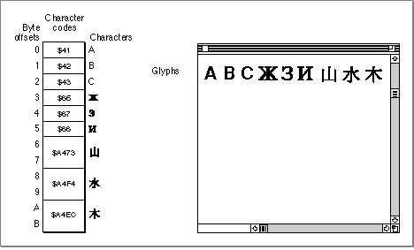
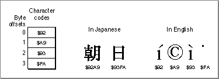

Legacy Document
Important: The information in this document is obsolete and should not be used for new development.
Important: The information in this document is obsolete and should not be used for new development.


Characters, Glyphs, Character Codes, and Bytes
In memory, applications store text as numerical representations of characters. On the screen, QuickDraw draws text as bitmapped representations of those characters, generated from a particular font. To clarify how numbers in memory are converted to letters on the screen, keep the following terms in mind. See also Figure 1-3.A writing system's alphabet, numbers, punctuation, and other writing marks consist of characters. A character is a symbolic representation of an element of a writing system; it is the concept of, for example, "lowercase a" or "the number 3". It is an abstract object, defined by custom in its own language.
As soon as you write a character, however, it is no longer abstract but concrete. The exact shape by which a character is represented is called a glyph. A font, then, is a collection of glyphs, all of similar design, that constitute one way to represent the characters of the language. The "characters" that QuickDraw places on the screen are really glyphs.
In memory, text is stored as character codes, where each code is a number that defines a particular (abstract) character. The "characters" that an application reads into or out of a buffer, sorts, and searches for are really numeric codes. One purpose of a Macintosh font is to provide glyphs that the system software can associate with character codes; different fonts for the same language will typically have different glyphs, all representing the same character, for a specific character code. Thus no matter which font you use, an English "C" is always a "C" (character code $43), though it may be Garamond or Chicago font, italic or bold style, and 7 points or 72 points in size. (Note that fonts in certain languages may have more than one glyph per character, and may have special glyphs for various combinations of characters.)
Figure 1-3 Bytes, character codes, characters, and glyphs
 In computer memory, 1 byte (8 bits) is commonly used to store a single character code. For most languages that is sufficient: the standard ASCII character set (also called low ASCII) requires only 7 bits per character code, and the Apple Standard Roman character set (an extended ASCII character set derived from the original Macintosh character set) requires only 1 byte per character code. In many other languages, such as Russian, Arabic, and Thai, each character code is also 1 byte in size. But in some East Asian languages such as Japanese, Chinese, and Korean, the character set is so large that most character codes must be 2 bytes long. Macintosh system software provides routines to help you recognize and manipulate 2-byte characters; if your application is to be useful throughout the world, you must be prepared to deal with 2-byte characters.
The left side of Figure 1-3 shows a portion of a text buffer in memory. Byte offsets into the buffer are shown down the left side of the column. The character codes the buffer contains are shown within the column; note that some codes are a single byte, whereas others are 2 bytes in size. (For clarity, miniature representations of the characters defined by those character codes are shown down the right side of the column.)
The right side of Figure 1-3 shows what happens when QuickDraw draws the contents of the buffer. The character codes define which glyphs are placed on the screen, and in what order. The character codes do not define the style or size of the glyphs, however.
Character codes are only numbers; the meaning of each character code is different in different writing systems. In Figure 1-4, for example, the same four bytes are interpreted very differently if they are considered to be two Japanese character codes than if they are considered to be four English ( = Roman writing system) character codes.
Figure 1-4 Four bytes displayed in Japanese and in English
